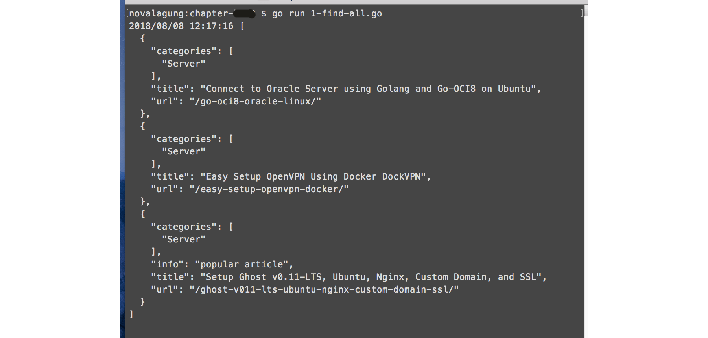
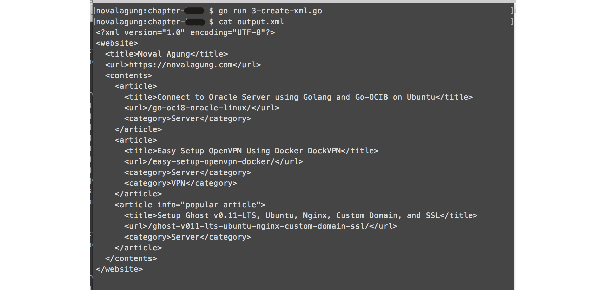

C.21. Parse & Generate XML (etree)
Pada bab ini kita akan belajar cara parsing file xml, dan cara membuat xml baru. Library yang digunakan adalah etree, silakan go get terlebih dahulu.
go get -u github.com/beevik/etree
C.21.1. Membaca dan Parsing File XML
Mari langsung kita praktekan, siapkan folder projek baru. Buat satu buah file data.xml, isinya sebagai berikut.
<?xml version="1.0" encoding="UTF-8"?>
<website>
<title>Noval Agung</title>
<url>https://novalagung.com</url>
<contents>
<article>
<category>Server</category>
<title>Connect to Oracle Server using Golang and Go-OCI8 on Ubuntu</title>
<url>/go-oci8-oracle-linux/</url>
</article>
<article>
<category>Server</category>
<title>Easy Setup OpenVPN Using Docker DockVPN</title>
<url>/easy-setup-openvpn-docker/</url>
</article>
<article info="popular article">
<category>Server</category>
<title>Setup Ghost v0.11-LTS, Ubuntu, Nginx, Custom Domain, and SSL</title>
<url>/ghost-v011-lts-ubuntu-nginx-custom-domain-ssl/</url>
</article>
</contents>
</website>
Silakan perhatikan xml di atas, akan kita ambil semua element article beserta isinya, untuk kemudian ditampung dalam slice.
Buat file main, didalamnya, buat objek dokumen bertipe etree.Document lewat fungsi etree.NewDocument(). Dari objek tersebut, baca file xml yang sudah dibuat, gunakan method .ReadFromFile() untuk melakukan proses baca file.
package main
import (
"encoding/json"
"github.com/beevik/etree"
"log"
)
type M map[string]interface{}
func main() {
doc := etree.NewDocument()
if err := doc.ReadFromFile("./data.xml"); err != nil {
log.Fatal(err.Error())
}
// ...
}
Dari objek doc, ambil root element <website/>, lalu akses semua element <article/> kemudian lakukan perulangan. Di dalam tiap perulangan, ambil informasi title, url, dan category, tampung sebagai element slice rows.
root := doc.SelectElement("website")
rows := make([]M, 0)
for _, article := range root.FindElements("//article") {
row := make(M)
row["title"] = article.SelectElement("title").Text()
row["url"] = article.SelectElement("url").Text()
categories := make([]string, 0)
for _, category := range article.SelectElements("category") {
categories = append(categories, category.Text())
}
row["categories"] = categories
if info := article.SelectAttr("info"); info != nil {
row["info"] = info.Value
}
rows = append(rows, row)
}
Objek element menyediakan beberapa method untuk keperluan seleksi dan pencarian element. Empat diantaranya sebagai berikut.
- Method
.SelectElement(), untuk mengambil satu buah child element sesuai selector. - Method
.SelectElements(), sama seperti.SelectElement(), perbedannya yang dikembalikan adalah semua child elements (sesuai selector). - Method
.FindElement(), untuk mencari elements dalam current element, bisa berupa child, grand child, atau level yang lebih dalam, sesuai selector. Yang dikembalikan satu buah element saja. - Method
.FindElements(), sama seperti.FindElement(), perbedannya yang dikembalikan adalah semua elements (sesuai selector).
Pada kode di atas, hasil dari statement root.FindElements("//article") di looping. Statement tersebut mengembalikan banyak element sesuai selector pencarian. Arti selector //article sendiri adalah melakukan pencarian element dengan nama article secara rekursif.
Di tiap perulangan, child element title dan url diambil. Gunakan method .Text() untuk mengambil isi element.
Sedangkan pada element <category/> pencarian child elements dilakukan menggunakan method .SelectElements(), karena beberapa artikel memiliki lebih dari satu category.
Untuk mengakses value dari atribut, gunakan method .SelectAttr().
Setelah perulangan selesai, data artikel ada dalam objek rows. Tampilkan isinya sebagai JSON string.
bts, err := json.MarshalIndent(rows, "", " ")
if err != nil {
log.Fatal(err)
}
log.Println(string(bts))
Jalankan aplikasi, lihat hasilnya.

C.21.2. XML Query
XQuery atau XML Query adalah bahasa query untuk pengolahan XML. Spesifikasinya bisa dilihat di https://www.w3.org/TR/xquery-31.
Pada pembahasan di atas kita menggunakan query //article untuk melakukan pencarian semua element artikel secara rekursif.
Berikut adalah contoh lain implementasi xquery yang lebih kompleks.
popularArticleText := root.FindElement(`//article[@info='popular article']/title`)
if popularArticleText != nil {
log.Println("Popular article", popularArticleText.Text())
}
Penjelasan mengenai xquery //article[@info='popular article']/title dipecah menjadi 3 tahap agar mudah untuk dipahami.
- Selector bagian
//article, artinya dilakukan pencarian rekursif dengan kriteria: element bernamaarticle. - Selector bagian
[@info='popular article'], artinya dilakukan pencarian dengan kriteria: element memiliki atributinfoyang berisipopular article. - Selector bagian
/title, artinya dilakukan pencarian child element dengan kriteria: element bernamatitle.
Jika 3 penjelasan bagian di atas digabungkan, maka kurang lebih arti dari //article[@info='popular article']/title adalah, dilakukan pencarian secara rekursif dengan kriteria adalah: element bernama article dan harus memiliki atribut info yang berisi popular article, setelah diketemukan, dicari child element-nya menggunakan kriteria: element bernama title.
Berikut adalah hasil dari query di atas.
Silakan coba explore sendiri mengenai xquery untuk contoh lainnya.
C.21.3. Membuat XML dari Golang
Di atas kita telah mempelajari cara baca XML; kali ini kita akan coba buat file XML menggunakan etree. Informasi yang akan ditulis ke file xml datanya bersumber dari JSON string (yang nantinya di-decode terlebih dahulu ke bentuk objek sebelum digunakan).
Siapkan file baru, buat struct Document. Nantinya sebuah objek dicetak lewat struk ini, tugasnya sendiri adalah menampung data hasil proses decoding json.
package main
import (
"encoding/json"
"github.com/beevik/etree"
"log"
)
type Document struct {
Title string
URL string
Content struct {
Articles []struct {
Title string
URL string
Categories []string
Info string
}
}
}
func main () {
// code here
}
Siapkan JSON string.
const jsonString = `{
"Title": "Noval Agung",
"URL": "https://novalagung.com",
"Content": {
"Articles": [{
"Categories": [ "Server" ],
"Title": "Connect to Oracle Server using Golang and Go-OCI8 on Ubuntu",
"URL": "/go-oci8-oracle-linux/"
}, {
"Categories": [ "Server", "VPN" ],
"Title": "Easy Setup OpenVPN Using Docker DockVPN",
"URL": "/easy-setup-openvpn-docker/"
}, {
"Categories": [ "Server" ],
"Info": "popular article",
"Title": "Setup Ghost v0.11-LTS, Ubuntu, Nginx, Custom Domain, and SSL",
"URL": "/ghost-v011-lts-ubuntu-nginx-custom-domain-ssl/"
}]
}
}`
Decode JSON string di atas ke objek cetakan Document.
data := Document{}
err := json.Unmarshal([]byte(jsonString), &data)
if err != nil {
log.Fatal(err.Error())
}
Selanjutnya buat objek etree baru, siapkan root element website. Di dalamnya buat 2 child elements: title dan url, nilai masing-masing didapat dari objek data.
doc := etree.NewDocument()
doc.CreateProcInst("xml", `version="1.0" encoding="UTF-8"`)
website := doc.CreateElement("website")
website.CreateElement("title").SetText(data.Title)
website.CreateElement("url").SetText(data.URL)
Method .CreateElement() digunakan untuk membuat child element baru. Pemanggilannya disertai dengan satu parameter, yang merupakan representasi dari nama element yang ingin dibuat.
Method .SetText() digunakan untuk menge-set nilai element.
Siapkan satu element lagi dibawah root, namanya contents. Loop objek slice artikel, dan di tiap perulangannya, buat element dengan nama article, sisipkan sebagai child contents.
content := website.CreateElement("contents")
for _, each := range data.Content.Articles {
article := content.CreateElement("article")
article.CreateElement("title").SetText(each.Title)
article.CreateElement("url").SetText(each.URL)
for _, category := range each.Categories {
article.CreateElement("category").SetText(category)
}
if each.Info != "" {
article.CreateAttr("info", each.Info)
}
}
Khusus untuk objek artikel yang property .Info-nya tidak kosong, buat atribut dengan nama info pada element article yang bersangkutan, simpan nilai property sebagai nilai atribut tersebut.
Terakhir simpan objek dokumen etree sebagai file.
doc.Indent(2)
err = doc.WriteToFile("output.xml")
if err != nil {
log.Println(err.Error())
}
Method .Indent() di atas digunakan untuk menentukan indentasi element dalam file.
Jalankan aplikasi, lihat hasilnya.

- etree, by Brett Vickers, BSD-2-Clause license